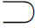
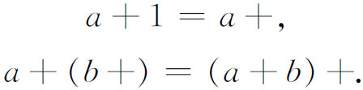
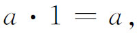
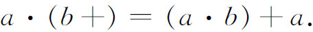

4．有理数的理论
为数系建立基础的下一步是关于有理数的定义及其性质的推演。如上所述，在这方向上的一两个尝试是先于无理数方面的工作的。大多数在有理数方面工作的人都假定普通整数的本质与属性是已知的，并认为问题在于逻辑地建立负数和分数。
第一个这样的努力是由欧姆（1792—1872）做出的。他是柏林的教授，物理学家欧姆（Georg Simon Ohm）的弟弟。他在他的《数学的一个完备相容系的研究》（Versuch eines vollkommen consequenten Systems der Mathematik，1822）中做出了这个努力。后来魏尔斯特拉斯在1860年间的讲演中，从自然数导出了有理数。他引进正有理数作为一对自然数，负整数作为另一类型的自然数偶，而负有理数作为一对正负整数。皮亚诺（Giuseppe Peano）独立地使用了这个思想，我们将联系他的工作在以后作较详细的介绍。魏尔斯特拉斯没有意识到有必要去澄清整数的逻辑。实际上他的有理数理论也没有免除困难。然而从1859年以后，在他的讲演中已正确地肯定，只要承认了自然数，建立实数就不再需要进一步的公理了。
建立有理数系的关键问题，在于采取一些步骤来构造普通整数的基础并确立整数的性质。在那些从事于整数理论工作的人们中，有少数人相信，像自然数这样基本的东西，已不可能再加以逻辑分析了。克罗内克就是坚持这样的观点的。他之所以如此，是出于哲学上的考虑，关于这些我们将在以后更深入地讨论。克罗内克也愿意把分析算术化，也就是把分析建立在整数的基础上；但他认为人对于整数的知识，除了直接承认以外，不能再做什么了。人对于这些知识有着基本的直观。他说“上帝创造了整数，其他一切都是人造的”。
戴德金在他的《数的性质与意义》（Was sind und was sollen die Zahlen）(16)的著作中给出了一个整数理论。这个著作写作时间是从1872年到1878年，虽然发表的时间是1888年。他用了集合论的思想，这个思想在那时康托尔早已领先，而且不久就被认为有很大的重要性。但无论如何，戴德金的处理过于复杂，以至得不到多大的注意。
对于整数的处理，最能适合19世纪后叶的公理化倾向的，是整个用一组公理来引进整数。利用戴德金在上面提到的著作中所获得的结果，皮亚诺（1858—1932）在他的《算术原理新方法》（Arithmetices Principia Nova Methodo Exposita，1889）中(17)，首先完成了这个工作。由于皮亚诺的处理已被广泛使用，我们将介绍它。
皮亚诺用了许多符号，目的在使推理干净利落。例如∈表示属于；

表示包含；N0表示自然数类；a＋表示后继于a的下一个自然数。皮亚诺在他的所有数学表达中，都采用这些符号。他的《数学公式》（Formulario mathematico，五卷，1895—1908）一书就是显著的例子。他在讲课时也使用这些符号，因而学生们造了反。他试着用全部及格的办法去满足他们，但没有起作用，因而他被迫辞去他在都灵大学的教授职位。虽然皮亚诺的工作影响到符号逻辑的进一步发展，以及后来由弗雷格（Gottlob Frege）与罗素发起的把数学建筑在逻辑上的运动，但他的工作必须与弗雷格和罗素的工作区分开来，皮亚诺并不要把数学建立在逻辑上。对于他，逻辑只是数学的仆人。
皮亚诺从不经定义的“集合”、“自然数”、“后继者”与“属于”等概念出发（参见第42章第2节）。他关于自然数的五个公理是：
（1）1是一个自然数。
（2）1不是任何其他自然数的后继者。
（3）每一个自然数a都有一个后继者。
（4）如果a与b的后继者相等，则a与b也相等。
（5）若一个由自然数组成的集合S含有1，又若当S含有任一数a时，它一定也含有a的后继者，则S就含有全部自然数。
这最后一个公理就是数学归纳法公理。
皮亚诺采取了关于相等的相反、对称和传递公理。这就是a＝a；若a＝b，则b＝a；若a＝b且b＝c，则a＝c。他用如下的叙述来定义加法：对于每一对自然数a与b，有唯一的和a＋b存在，使

同样地，他用如下的说法来定义乘法：对于每一对自然数a与b，有唯一的积a·b存在，使


他接着建立了自然数的所有人们熟悉的性质。
从自然数及其性质出发，可以直接定义负整数与有理数，并建立其性质。我们可以先定义正的与负的整数作为新的一类数，它们每一个是一对有序的自然数。这样（a，b）就是一个整数，其中a与b是自然数。（a，b）的直观意义是a－b。从而当a＞b时，（a，b）就是通常的正整数，而当a＜b时，（a，b）就是通常的负整数。适当地制定加法与乘法运算的定义，就可以导出正负整数的通常的性质。
有了整数，就可以通过有序的整数对来引进有理数。即若A与B是整数，有序对（A，B）就是一个有理数。直观地说，（A，B）就是A/B。适当地制定关于这种数对的加法与乘法运算的定义，就可以导出有理数的通常的性质。
所以，一旦对于自然数的逻辑处理完成之后，建立实数系的基础问题就完备了。正如我们已经注意到的，一般说来，从事于无理数理论工作的人们，总是假定对有理数已经彻底了解，因而可以承认它们，或者稍微做出一些澄清它们的姿态。在哈密顿把复数建立于实数基础上之后，在用有理数定义了无理数之后，这最后一类——有理数——的逻辑终于创立起来了。这个历史顺序实质上与需要用来建立复数系的逻辑顺序恰好相反。